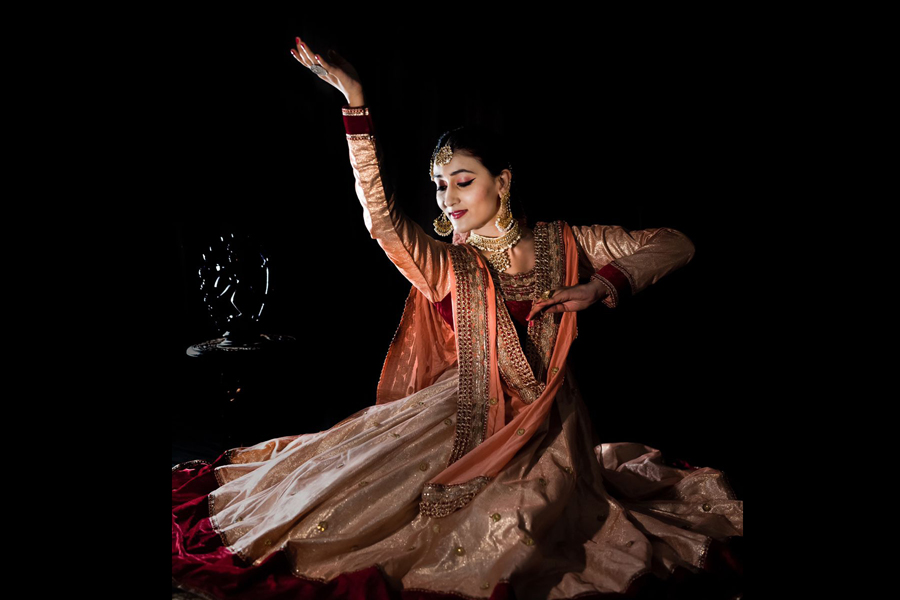

Kathak is one of the main genres of ancient Indian classical dance and is traditionally regarded to have originated from the travelling bards of North India referred as Kathakars or storytellers. These Kathakars wandered around and communicated legendary stories via music, dance and songs quite like the early Greek theatre. The genre developed during the Bhakti movement, the trend of theistic devotion which evolved in medieval Hinduism. The Kathakars communicate stories through rhythmic foot movements, hand gestures, facial expressions and eye work. This performing art that incorporates legends from ancient mythology and great Indian epics, especially from the life of Lord Krishna became quite popular in the courts of North Indian kingdoms. Three specific forms of this genre that is three gharanas (schools), which mostly differ in emphasis given to footwork versus acting, are more famous namely, the Jaipur gharana, the Benaras gharana and the Lucknow gharana..
